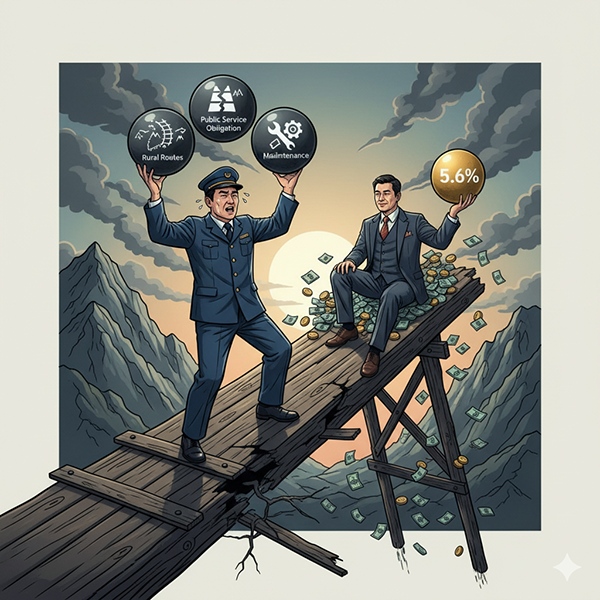

정부는 KTX-SRT 분리 체제를 '성공적인 경쟁 도입'으로 평가하지만, 그 실상은 공정한 경쟁과는 거리가 멀다. 이 관계는 처음부터 한쪽에는 막대한 공적 의무를, 다른 한쪽에는 확실한 수익을 보장하도록 설계된 '기울어진 운동장'이며, 코레일이라는 숙주에 의존하는 기생적 공존 관계에 가깝다. '경쟁'이라는 허울 뒤에 가려진 분리 체제의 불공정한 착취 구조를 숫자를 통해 분석한다.
KTX-SRT 분리 체제의 불공정성은 태생부터 예견된 것이었다. 정부는 SRT(주)을 설립하며 초기에는 대한민국 철도 교통의 최고 '황금 노선'인 경부선과 호남선 고속철도 면허를 집중적으로 부여했다. 반면 코레일은 수익성은 낮지만 국민의 교통 기본권을 위해 운영해야 하는 벽지, 비수익 노선 운영 의무, 즉 '공익서비스의무(PSO)'를 모두 떠안았다.
법적으로 국가가 보상해야 할 PSO 손실조차 제대로 보전되지 않았고, 2014년부터 2021년까지 그 미보상액 누계는 약 1조 9천억 원에 달하는 것으로 추산된다. 한쪽은 수익이 보장된 길을, 다른 한쪽은 공익의 멍에를 짊어지고 달리는 불공정한 경주가 시작부터 설계된 것이다.
SRT는 사실상 '열차 없는 철도회사'에 가깝다. SRT 운행에 사용되는 고속열차는 코레일로부터 임대한 것이며, 열차의 정비와 유지보수, 관제 시스템 역시 코레일의 자산과 인력에 의존하고 있다. 이러한 중복 행정과 비효율로 인해 발생하는 사회적 비용은 2018년 국토부 연구용역에서 연간 559억 원에 달하는 것으로 추정된 바 있다.
이 기생 구조의 정점에는 'SRT 풋옵션(Put Option) 계약'이 존재한다. SRT 설립 당시, 재무적 투자자로 참여한 사학연금, 기업은행, 산업은행 등은 'SRT의 경영 실적이 부진할 경우, 투자 원금에 연 5.6%의 복리수익률을 보장하여 주식을 되팔 수 있는 권리'를 부여받았다. 더욱 핵심적인 문제는, 이 주식을 의무적으로 되사줘야 하는 주체가 SRT가 아닌 경쟁사인 코레일이라는 점이다. 이는 SRT가 경영에 실패하더라도 투자자들은 손실 없이 막대한 이익을 얻고, 그 모든 위험 부담은 코레일이 떠안는 구조를 의미한다. 결국 KTX-SRT 분리 체제는 공정한 경쟁이 아닌, 코레일의 희생을 담보로 특정 금융자본의 이익을 보장하기 위해 만들어진 통로였음이 드러난다.
분리 체제의 유일한 성과처럼 홍보되는 'SRT 10% 저렴한 요금' 역시 기만적인 수사에 불과하다. 이는 코레일에 모든 공적 부담과 비용을 전가하고 SRT에는 알짜 노선만 몰아준 결과 가능한 착시 현상이다. 만약 코레일이 SRT와 동일한 조건에서 경쟁한다면 요금은 지금보다 훨씬 더 낮아질 수 있다. 더 큰 문제는 이 '10% 할인'이 전 국민에게 돌아가는 혜택이 아니라는 점이다. SRT가 운행하지 않는 지역 주민들은 할인 혜택은커녕 고속철도 이용 자체에 제약을 받으며 명백한 지역 차별을 겪고 있다. 눈앞의 작은 이익으로 더 큰 손실을 가리는 기만인 셈이다.
이것은 경쟁이 아니다. 코레일에 공익의 짐을 모두 떠넘기고, 코레일의 자산에 의존하며, 심지어 코레일의 재정을 담보로 투자자들의 배를 불리는 이 기형적인 구조는 '착취'라고 불러야 마땅하다. '연 5.6% 수익 보장 풋옵션'이라는 독소조항은 이 모든 불공정의 명백한 증거다. 이 기울어진 운동장을 그대로 둔 채 우리의 노동조건 개선과 임금 정상화를 이야기하는 것은 공허한 메아리일 뿐이다. 이 불합리한 착취의 고리를 끊어내는 것, 그것이 바로 고속철도 통합 투쟁의 본질이다. 우리의 권리를 되찾기 위한 첫걸음은 이 기울어진 운동장을 바로 잡는 투쟁에 함께하는 것이다.
목차로 돌아가기